ChoreBoy Code Studio User Manual
Hobbyist Edition
Table of Contents
- ChoreBoy Code Studio
- 1) Quick Start
- 2) Interface Tour
- 3) Core Daily Workflow
- 4) Projects and Files
- 5) Editing and Navigation
- 6) Run, Debug, and Python Console
- 7) Settings and Customization
- 8) Plugins
- 9) Packaging, Sharing, and Backup
- 10) Troubleshooting
- 11) Keyboard Shortcuts
- Appendix A — Known Limits and Notes
- Appendix B — One-Page Quick Reference
ChoreBoy Code Studio
User Manual (Print Edition)
Version: 0.1 Audience: Hobbyist users on ChoreBoy Format: Letter, full color
How to use this manual
This manual is made to help you get real work done quickly.
If you are new, start with Chapter 1 (Quick Start). You can follow it in one sitting and get to a successful run.
If you already use the editor, jump to the chapter that matches your task:
- Need file/project help -> Chapter 4
- Need editing/search help -> Chapter 5
- Need run/debug/console help -> Chapter 6
- Need settings help -> Chapter 7
- Need troubleshooting -> Chapter 10
Manual conventions
- Menu paths are written like:
File > Open Project... - Keyboard shortcuts are written like:
Ctrl+S - Important warnings are marked as Important
- Tips are marked as Tip
About screenshots
Each chapter uses screenshots to show the exact UI area to look at. Captions tell you what detail matters in each image.
1) Quick Start
This chapter gets you from launch to a successful run.
If all you do today is this chapter, that is enough.
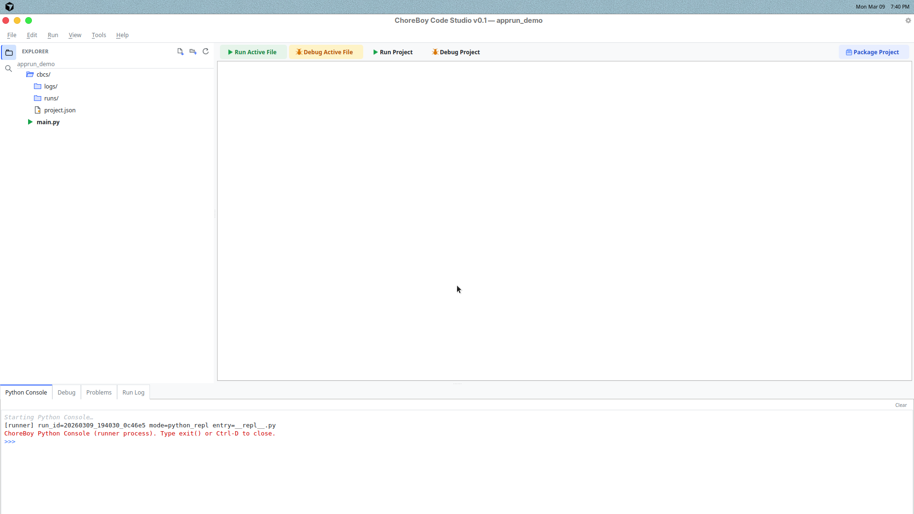
Figure 1 — Main window after launch
Step 1 — Launch the editor
Open ChoreBoy Code Studio from your application menu or desktop shortcut.
When the window opens, check the status bar. Look for a startup message like:
Startup: Runtime ready (x/x checks)(best case), orStartup: Runtime issues (x/x checks)(still usable, but you should run health checks soon).
Step 2 — Open or create a project
Choose one:
File > Open Project...to open an existing folder, orFile > New Project...to create a project from a template.
If this is your first time, use Utility Script template.
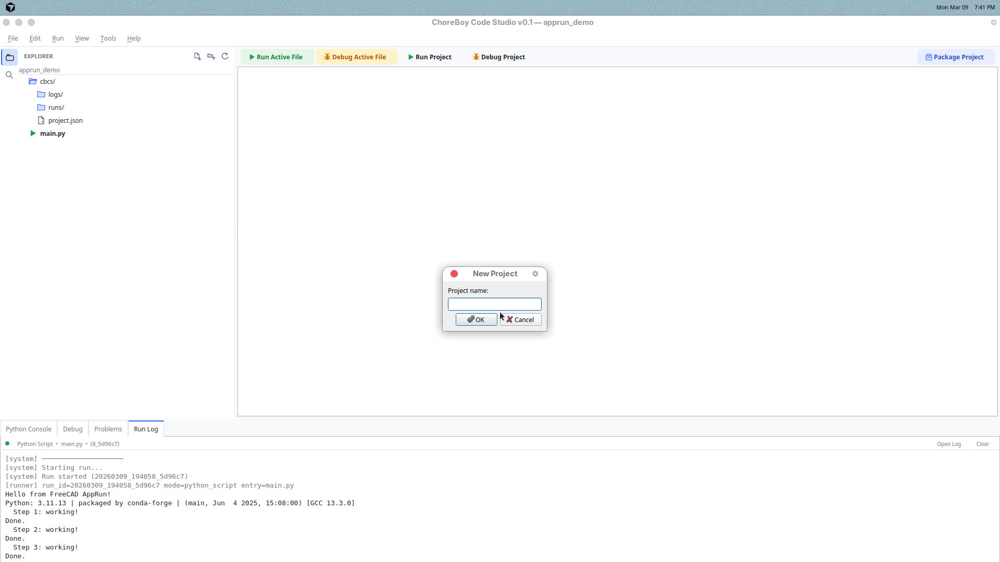
Figure 2 — New Project dialog with template options
Step 3 — Open main.py
In the left project tree, click main.py. The file opens in the editor tabs.
Type a simple line:
print("Hello from ChoreBoy Code Studio")
Step 4 — Save your changes
Press Ctrl+S (or use File > Save).
You should see the tab’s modified marker clear after save.
Step 5 — Run your code
Press F5 for Run Active File.
Output appears in the Run Log panel at the bottom.
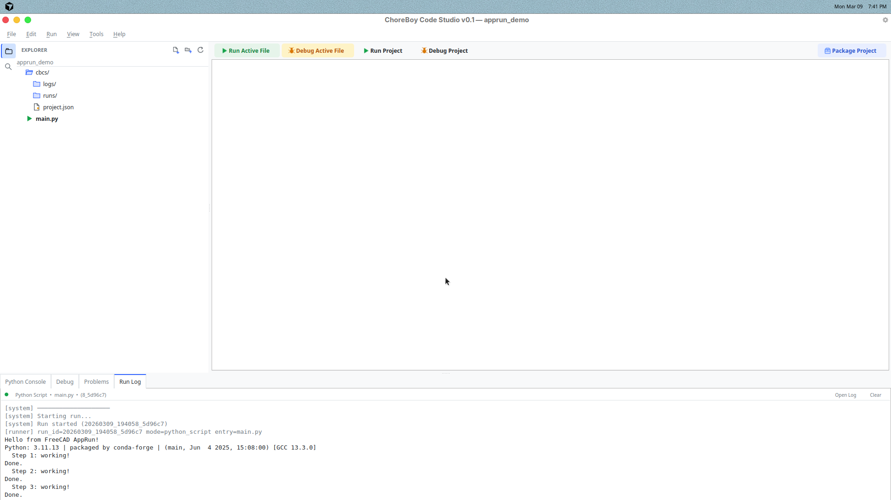
Figure 3 — Run Log showing successful output
Step 6 — Read output and errors
- Normal output appears as run log text.
- Error output appears with traceback details.
- The Problems panel helps you jump to the right file and line.
Step 7 — Stop a running script
If your script keeps running, press Shift+F2 or click Stop in the toolbar.
The status bar changes from running to terminated/idle.
Quick success checklist
You are set up if all of these are true:
- You opened a project.
- You edited and saved a file.
- You ran code with
F5. - You saw output in Run Log.
- You can stop a long-running script.
If one of these fails, go to Chapter 10 (Troubleshooting).
2) Interface Tour
This chapter explains what each part of the window does.

Figure 4 — Interface overview
1. Menu bar
Top menus are:
- File: project/file open/save/settings
- Edit: find/replace/navigation/edit helpers
- Run: run, debug, stop, test commands
- View: layout, theme, zoom
- Tools: plugin manager, linting, diagnostics, support bundle
- Help: getting started, shortcuts, example project, logs
2. Run/Debug toolbar
The toolbar gives quick access to run and debug commands. Use it when you want one-click control.
3. Left sidebar (Explorer/Search)
Main use:
- browse your project files,
- right-click for file actions,
- open files quickly.
4. Center editor tabs
This is where you write code and text.
Key things to notice:
- multiple tabs,
- modified marker when unsaved,
- preview tab behavior (single-click opens preview).
5. Bottom panels
The bottom tab area includes:
- Python Console (interactive REPL),
- Debug panel,
- Problems panel,
- Run Log panel.
These tabs are critical for diagnosis and debugging.
6. Status bar
The status bar shows:
- startup/runtime readiness,
- run state (idle/running/failed/terminated),
- active project info,
- current file cursor position and modified/saved state.
Tip: build a daily rhythm
Most users work best with this loop:
- Open file in editor.
- Edit + save.
- Run.
- Read Run Log/Problems.
- Repeat.
You can do almost all daily work from that loop.
3) Core Daily Workflow
This chapter is the practical "everyday use" sequence.
Open a project
Use File > Open Project... and pick a project folder.
If the folder is a normal Python folder without cbcs/project.json, Code Studio can initialize it on first open.
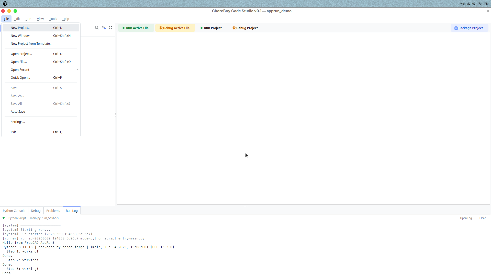
Figure 5 — Open Project flow
Open files
In the project tree:
- single-click opens a preview tab,
- double-click opens a permanent tab.
If you open the same file again, Code Studio reuses the tab.
Edit safely
When you type, the tab shows a modified marker. That means changes are not saved yet.
Use:
Ctrl+Sfor Save,Ctrl+Shift+Sfor Save All.
Run active file vs run project
This is an important difference:
F5-> Run Active File (the file you are currently editing)Shift+F5-> Run Project (project entry point)
Use Active File for quick tests. Use Run Project for full app behavior.
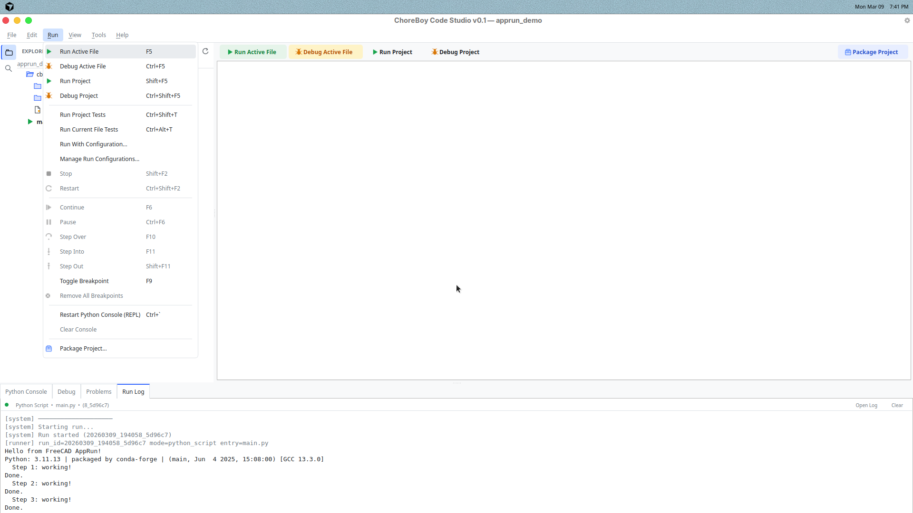
Figure 6 — Run menu showing both options
Read results
After a run:
- check Run Log for output,
- check Problems for parsed errors and jump links.
If the run fails, look at traceback lines first.
Stop long runs
If a script is still running:
- click Stop in toolbar, or
- use
Shift+F2.
You should see run state change in the status bar.
Avoid common mistakes
Mistake: running old code
Cause: forgot to save before run. Fix: press Ctrl+S, then run again.
Mistake: running the wrong file
Cause: used Run Project when you expected Active File. Fix: use F5 for active file, or set correct project entry point.
Mistake: output appears missing
Cause: wrong bottom tab selected. Fix: open Run Log tab.
4) Projects and Files
This chapter covers project setup and file-tree operations.
Create a new project
Use File > New Project....
Choose a template:
- Utility Script — simplest starter
- Qt App — GUI starter
- Headless FreeCAD Tool — backend-safe starter
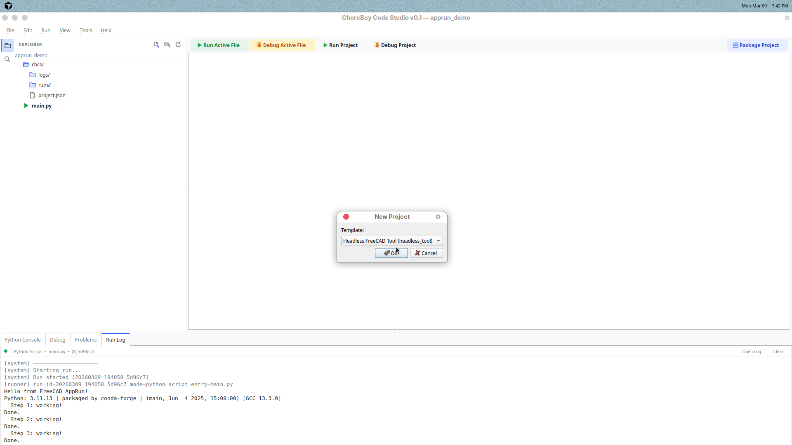
Figure 7 — Template picker
Open recent projects
Use File > Open Recent.
This is the fastest way to get back to current work.
File tree actions
Right-click files/folders in the tree for actions like:
- New File / New Folder
- Rename
- Move to Trash
- Duplicate
- Copy / Cut / Paste
- Copy path / Copy relative path
- Reveal in file manager
- Run (for Python files)
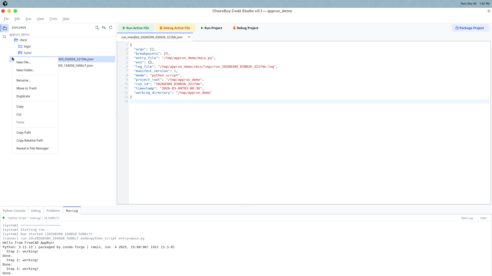
Figure 8 — File tree context menu
Set the project entry point
If Run Project should start from a specific file:
- Right-click that file in tree.
- Click Set as Entry Point.
This updates project metadata and helps keep team behavior consistent.
Project metadata
Important files inside a project:
cbcs/project.json— project behavior settings (entry file, run info)cbcs/settings.json— project-level setting overridescbcs/logs/— run logs
Good project habits
- Keep source files in clear folders (for example
app/,tests/). - Use meaningful file names.
- Keep
README.mdupdated with project purpose. - Back up the full project folder regularly.
5) Editing and Navigation
This chapter helps you move faster inside code and text files.
Find and replace in current file
Use:
Ctrl+Fto findCtrl+Hto replace
Use this for focused edits in one file.
Find in files (project-wide)
Use Ctrl+Shift+F.
This opens the project-wide search panel and scans files for your text. Click a result to preview, and double-click to open permanently.
Figure 9 — Find in Files search panel
Quick Open
Use Ctrl+P.
Type part of a filename and choose from matches. This is usually faster than browsing deep folders.
Go to line
Use Ctrl+G, type line number, press Enter.
Helpful for traceback navigation and code review.
Go to definition and outline
Useful commands:
F12-> Go to DefinitionTools > Show Current File Outline
Use these when moving between related functions/classes.
Preview tabs (important behavior)
Code Studio supports preview tabs:
- single-click file -> preview tab (reused by next single-click),
- double-click file -> permanent tab,
- editing a preview tab promotes it to permanent.
This keeps tab clutter low while browsing.
Edit reliability tips
- Save often (
Ctrl+S). - Use Save All before major runs.
- Keep tabs organized: close files you are done with.
- Use Quick Open for fast file switching.
6) Run, Debug, and Python Console
This chapter explains how to execute and investigate your code.
Run modes at a glance
- Run Active File (
F5): runs the file in the active editor tab. - Run Project (
Shift+F5): runs the configured project entry file. - Debug Active File (
Ctrl+F5): starts debug flow for active file. - Debug Project (
Ctrl+Shift+F5): debug run for project entry file.
Basic run workflow
- Save the file (
Ctrl+S). - Press
F5. - Watch Run Log.
- If errors appear, open Problems and jump to issue lines.
Figure 10 — Run toolbar and bottom panels
Debug workflow (explicit step-by-step)
Step 1 — Set breakpoints
Click in the editor gutter next to a line number. A marker appears for that line.
Step 2 — Start debug
Use Ctrl+F5 for active file, or Ctrl+Shift+F5 for project entry.
Step 3 — Use Debug panel
Open the Debug bottom tab and use:
- Continue (
F6) - Pause (
Ctrl+F6) - Step Over (
F10) - Step Into (
F11) - Step Out (
Shift+F11)
You can also inspect stack and variable info in the panel.
Step 4 — Stop debugging
Use Stop when done or when execution is stuck.
Important debug notes
Debug behavior depends on runtime conditions. If breakpoints do not pause where expected:
- Confirm breakpoint is on executable code (not blank/comment line).
- Save file before starting debug.
- Confirm you started the correct mode (Active File vs Project).
- Use Run Log + Problems as fallback diagnosis path.
In other words: if stepping is not acting as expected, you can still diagnose most issues quickly with a normal run and traceback.
Python Console (REPL)
Use the Python Console tab for quick experiments.
Examples:
x = 2
print(x + 3)
You can run short snippets, test expressions, and inspect values without changing files first.
When to use each tool
- Use Run for normal development.
- Use Debug when you need step-by-step control.
- Use Python Console for quick experiments and checks.
7) Settings and Customization
Use Settings to make Code Studio fit your workflow.
Open with File > Settings....
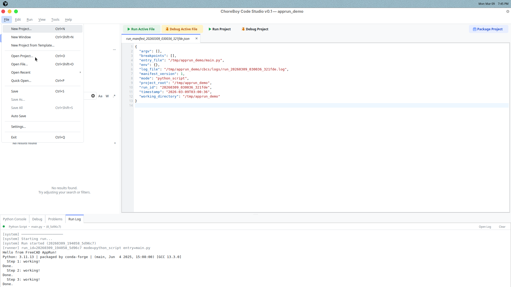
Figure 11 — File menu path to Settings
Global vs project scope
The scope selector controls where changes are saved:
- Global: applies to all projects for this user/machine.
- Project: applies only to current project (
cbcs/settings.json).
Project scope is useful when sharing consistent behavior with others.
Theme and view options
Use View > Theme to switch:
- System
- Light
- Dark
Use View > Zoom In/Out/Reset for text readability.
Keybindings
In Settings, Keybindings tab lets you:
- search commands,
- change shortcuts,
- detect conflicts,
- reset to defaults.
Syntax colors
Use Syntax Colors tab to customize token colors. You can control light and dark colors separately.
Linter controls
In Linter tab you can:
- enable or disable linting,
- choose lint provider,
- tune rule severities,
- override rules for a project.
Recommended starter setup
For most hobby users:
- Keep theme on System or Dark.
- Keep linting enabled.
- Use default shortcuts first, then customize only what you use daily.
- Use project scope only for settings that truly belong to that project.
8) Plugins
Plugins let you add optional features without cluttering the core editor.
Open plugin tools from:
Tools > Plugin Manager...
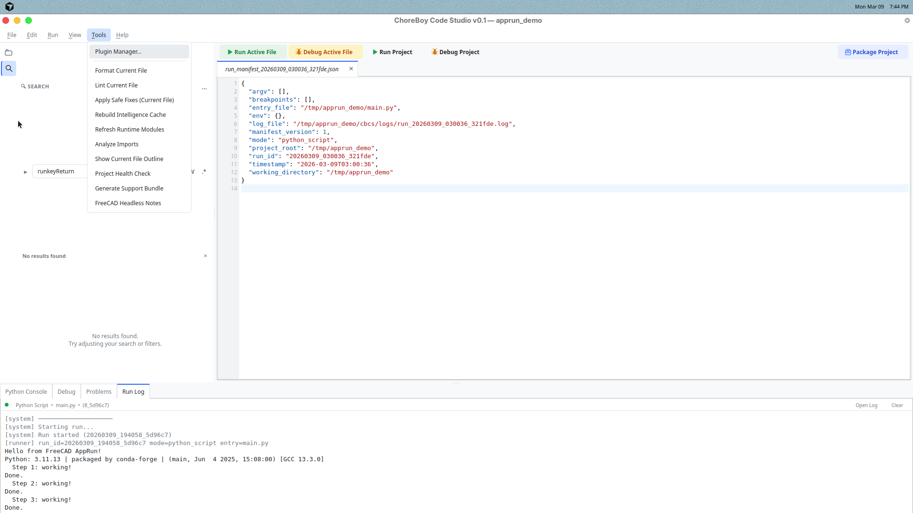
Figure 12 — Tools menu path to Plugin Manager
What plugins are good for
Use plugins for specialized tasks that not every user needs.
Examples:
- extra automation commands,
- project-specific helpers,
- custom integrations.
Basic plugin lifecycle
- Install plugin from local package/folder.
- Review compatibility and trust prompts.
- Enable plugin.
- Use contributed commands.
- Disable/remove when no longer needed.
Safety features
Code Studio includes safety controls:
- safe mode startup,
- plugin failure quarantine,
- compatibility checks before activation.
These protections help keep the editor stable if a plugin fails.
Good plugin habits
- Install only from trusted sources.
- Keep plugin count small.
- Disable plugins you do not actively use.
- If startup issues appear, use safe mode and re-enable one-by-one.
9) Packaging, Sharing, and Backup
This chapter covers how to move your work safely.
Package a project
Use:
Run > Package Project...
This creates a distributable project folder with launcher metadata.
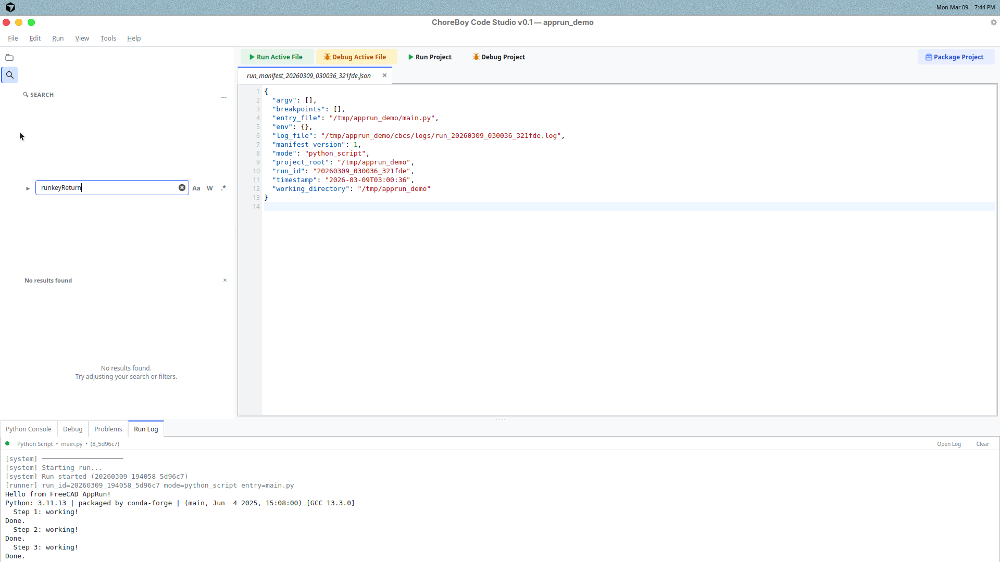
Figure 13 — Package Project button in the main window
Share projects with other users
When sharing:
- Include the whole project folder.
- Keep
cbcs/metadata included. - Include
README.mdwith basic run instructions.
Backup best practices
- Back up project folders regularly (for example, to USB).
- Keep at least two backup copies for important projects.
- Do a quick run test after restoring from backup.
Keep diagnostic history
Do not delete logs too aggressively.
Run logs in cbcs/logs/ are useful when troubleshooting older issues.
Before sending a project for help
Do this checklist:
- Save all files.
- Reproduce the issue once.
- Generate a support bundle (see Chapter 10).
- Share project + support bundle together.
10) Troubleshooting
Use this chapter when something does not work as expected.
First checks (always do these)
- Read the Run Log tab.
- Check the Problems panel.
- Look at startup status in the status bar.
- Run
Tools > Project Health Check.
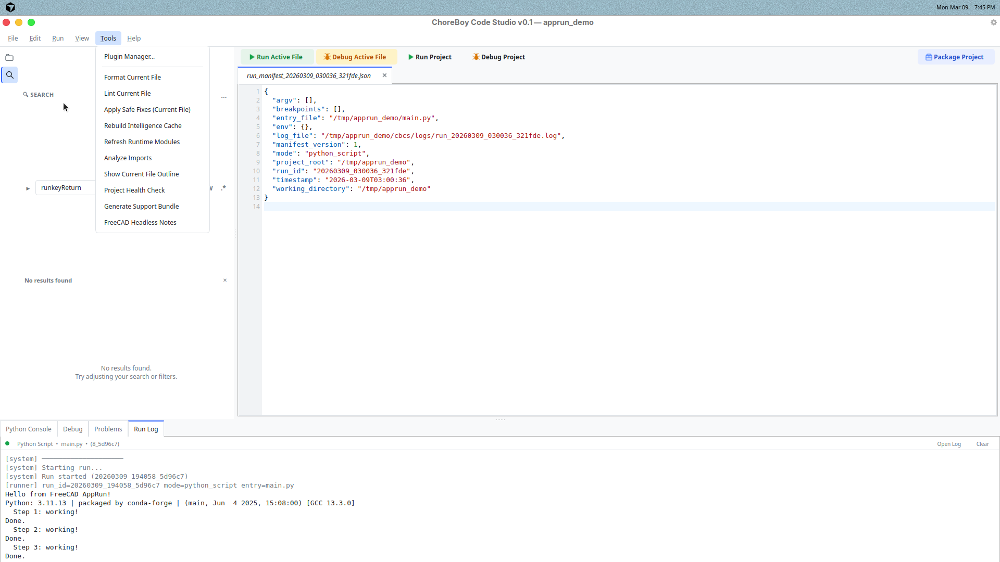
Figure 14 — Tools menu with Project Health Check command
Problem: project will not open
Likely causes:
- selected folder is not a valid/importable project,
- metadata file is invalid.
Fix:
- Open a folder that contains Python files.
- If needed, create/open with
File > New Project.... - Check error message details in popup/log.
Problem: run fails immediately
Likely causes:
- syntax/runtime error in file,
- wrong entry file.
Fix:
- Open Problems panel.
- Jump to first traceback line.
- Fix and save.
- Run again.
Problem: entry file is missing
If entry file was deleted or moved, Code Studio can prompt for replacement.
Fix:
- Choose a valid
.pyreplacement file in prompt. - Save updated project entry.
- Run project again.
Problem: debug does not pause at breakpoints
Likely causes:
- breakpoint on non-executable line,
- unsaved file,
- debugging different file than expected.
Fix:
- Save file first.
- Move breakpoint to executable code.
- Confirm active file vs project debug mode.
- If still not pausing, use normal run + Run Log + Problems for diagnosis.
Problem: FreeCAD GUI module error in run
Symptom:
Cannot load Gui module in console application
Meaning:
Your script hit a GUI-only FreeCAD path in a headless run context.
Fix:
- Open
Tools > FreeCAD Headless Notes. - Use headless-safe API path where possible.
- Retest.
Problem: uncertain environment state
Fix:
- Run
Tools > Project Health Check. - Read each failed check line.
- Apply suggested correction.
- Re-run the check.
Generate support bundle
When you need help from another person:
- Open project.
- Use
Tools > Generate Support Bundle. - Share generated bundle and project folder.
Figure 15 — Tools menu with Generate Support Bundle command
11) Keyboard Shortcuts
Shortcuts speed up daily work.
You can customize them in:
File > Settings... > Keybindings
Core editing and project shortcuts
Ctrl+N— New ProjectCtrl+Shift+N— New WindowCtrl+O— Open ProjectCtrl+P— Quick OpenCtrl+S— SaveCtrl+Shift+S— Save All
Find and navigation shortcuts
Ctrl+F— FindCtrl+H— ReplaceCtrl+G— Go To LineCtrl+Shift+F— Find in FilesF12— Go To DefinitionShift+F12— Find References
Run and debug shortcuts
F5— Run Active FileShift+F5— Run ProjectCtrl+F5— Debug Active FileCtrl+Shift+F5— Debug ProjectShift+F2— StopF10— Step OverF11— Step IntoShift+F11— Step OutF9— Toggle Breakpoint
Console and view shortcuts
Ctrl+\` — Restart Python ConsoleCtrl+=— Zoom InCtrl+-— Zoom OutCtrl+0— Reset Zoom
Tip
Keep shortcuts simple. Only customize what you use frequently.
Appendix A — Known Limits and Notes
This appendix lists practical limits you may see in real use.
Environment limits
- ChoreBoy users do not have direct terminal access.
- Some FreeCAD features require GUI modules and may fail in console/headless runs.
- Heavy projects may need extra care with organization and frequent saves.
Debug behavior note
Debug controls are available, but runtime conditions can affect breakpoint/step behavior.
If debug flow does not pause as expected:
- Save all changed files.
- Confirm executable breakpoint line.
- Confirm active file vs project debug mode.
- Fall back to run + traceback workflow for diagnosis.
Project portability note
Keep visible project metadata folders (cbcs/) intact when moving projects.
Do not remove:
cbcs/project.jsoncbcs/settings.json(if used)cbcs/logs/when diagnostic history matters
Appendix B — One-Page Quick Reference
Daily workflow
- Open project (
Ctrl+O) - Open file
- Edit
- Save (
Ctrl+S) - Run (
F5) - Read Run Log
- Fix issues from Problems panel
If something fails
- Check Run Log
- Check Problems panel
- Run Project Health Check
- Generate Support Bundle if needed
Most used commands
- Run Active File:
F5 - Run Project:
Shift+F5 - Stop:
Shift+F2 - Find in Files:
Ctrl+Shift+F - Quick Open:
Ctrl+P - Go To Definition:
F12